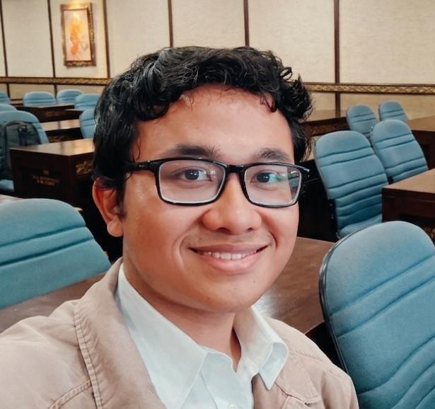

Sebastian Rasyid

Summary
I am a college student with strong will and dedication to learning web development and programming.
Education
- Computer and network technician - SMKN 1 Kuta Selatan.
2022 - 2025.
- Associate Computer Expert, Informatics Management - Politeknik Negri Bali (Undergraduate).
2025 - 2028.
Experience
- IT Support Internship - ABC Hotel (2024 - 2025).
- Troubleshooting guest and associate issues related to network, system, and IP tv's.
- Security maintenance.
- Performing PC maintenance by replacing old PCs with newer version.
- Setting up projectors for movie nights, guest, and associate needs.
- Daily network health checkup.
- Excuting repairs on a broken UTP cable.
- Banquet Daily Worker - XYZ Hotel (2025 - present).
- Preparing cutlery for guests.
- Providing service as waiter by serving foods and beverages to guests.
- Performing clean-up after events end.
Skills
- Have basic knowledge of Computer network and engineering
- Ability to communicate well in English.
- Adapt quickly to new environment.
- Able to work on invidual or group settings.
Certificate and Achivement
- Certificate of completion - Hotel ABC (2025).
- BNSP Certificate of competence - SMKN 1 Kuta Selatan (2025).
- 3rd place winner in district level network administration competition - SMKN 1 Kuta Selatan (2024).
- Toefl certificate (700+ score) - SMKN 1 Kuta Selatan (2024).
Other